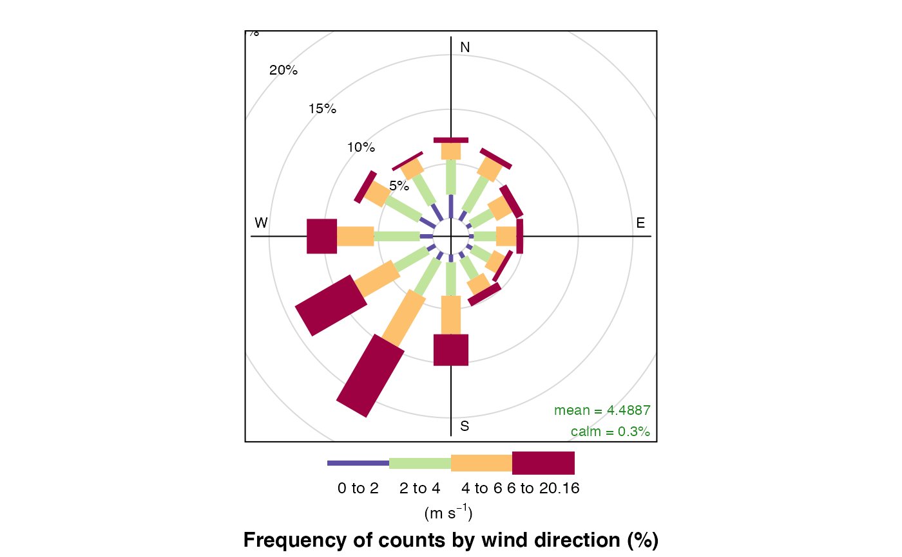

This is a UK Natural Environment Research Council (NERC) funded knowledge exchange project that aims to make available innovative analysis tools for air pollution data; with additional support from Defra. The tools have generally been developed to analyse data of hourly resolution (or at least a regular time series) both for air pollution monitoring and dispersion modelling. The availability of meteorological data at the same time resolution greatly enhances the capabilities of these tools.
openair contains collection of functions to analyse air pollution
data. Typically it is expected that data are hourly means, although most
functions consider other time periods. The principal aim to make
available analysis techniques that most users of air quality data and
model output would not normally have access to. The functions consist of
those developed by the authors and a growing number from other
researchers.
The package also provides access to a wide range of data sources including the UK Automatic Urban and Rural Network (AURN), networks run by King's College London (e.g. the LAQN) and the Scottish Air Quality Network (SAQN).
The package has a number of requirements for input data and these are
discussed in the manual (available on the openair website at
https://davidcarslaw.github.io/openair/). The key requirements are that a
date or date-time field must have the name `date' (and can be
Date or POSIXct format), that wind speed is represented as
`ws' and that wind direction is `wd'.
Most functions work in a very straightforward way, but offer many options for finer control and perhaps more in-depth analysis.
The openair package depends on several other packages written by
other people to function properly.
To ensure that these other packages are available, they need to be installed, and this requires a connection to the internet. Other packages required come with the R base system. If there are problems with the automatic download of these packages, see https://davidcarslaw.github.io/openair/ for more details.
NOTE: openair assumes that data are not expressed in local time where
'Daylight Saving Time' is used. All functions check that this is the
case and issue a warning if TRUE. It is recommended that data are
expressed in UTC/GMT (or a fixed offset from) to avoid potential
problems with R and openair functions. The openair manual
provides advice on these issues (available on the website).
To check to see if openair has been correctly installed, try some
of the examples below.
Most reference details are given under the specific functions. The principal reference is below but users may also wish to cite the manual (details for doing this are contained in the manual itself).
Carslaw, D.C. and K. Ropkins, (2012) openair --- an R package for air quality data analysis. Environmental Modelling & Software. Volume 27-28, 52-61.
See https://davidcarslaw.github.io/openair/ for up to date information on the project.
David Carslaw with initial support from Karl Ropkins
# load example data from package data(mydata) # summarise the data in a compact way if (FALSE) summaryPlot(mydata) # traditional wind rose windRose(mydata)  # basic plot if (FALSE) polarPlot(mydata, pollutant = "nox")